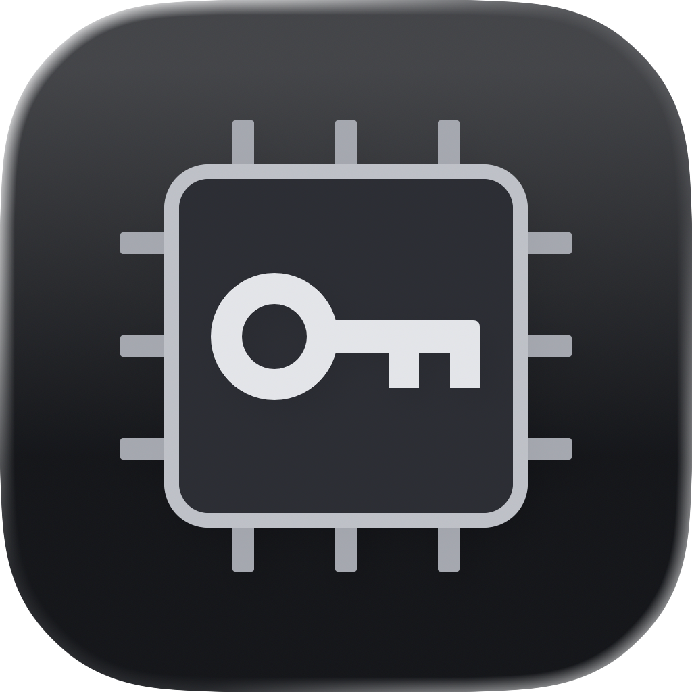
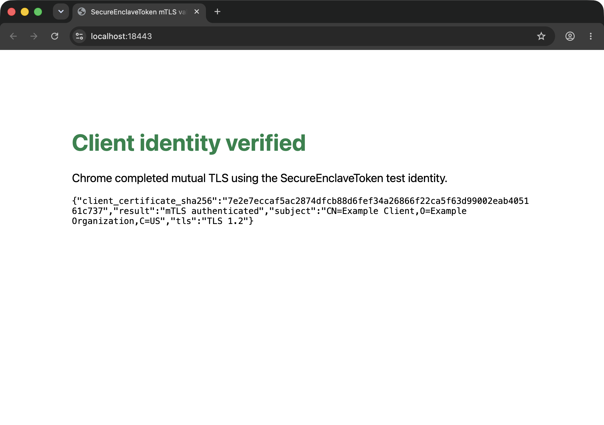

Secure Enclave Token
Create and manage keys in your Mac’s Secure Enclave. Use them for SSH and client certificate authentication, with a macOS app and command-line interface.
Apple Silicon · macOS Tahoe 26 or later

Keys and certificates
Manage multiple keys, generate signing requests, and load certificates for compatible macOS clients.
Using an identity
A loaded identity pairs a certificate with its Secure Enclave key.
SSH with the macOS keychain
Load an identity, then export a resident-key reference with Apple’s SSH tools. Add its public key to GitHub or your server, and point SSH to the macOS keychain provider.
The file on disk is a reference. The private key stays in the Secure Enclave. Keep the identity loaded when connecting.
Export a resident-key reference
With an identity loaded, run these commands in a new, empty directory. Add the resulting id_ecdsa_sk_rk.pub to your remote account’s authorized keys, then use the configuration shown here.
mkdir -p ~/.ssh/secure-enclave-token
cd ~/.ssh/secure-enclave-token
SSH_ASKPASS_REQUIRE=force SSH_ASKPASS=/usr/bin/true \
/usr/bin/ssh-keygen -w /usr/lib/ssh-keychain.dylib -KTo choose among multiple identities, consult man ssh-keychain for the KEYCHAIN_CERTIFICATES filter.
Host github.com
IdentityFile ~/.ssh/secure-enclave-token/id_ecdsa_sk_rk
SecurityKeyProvider /usr/lib/ssh-keychain.dylib
User git
IdentitiesOnly yesClient authentication in Chrome
Create a CSR with client authentication enabled, have it signed by a CA your server accepts, then import it. Chrome can discover the loaded identity and use it for mutual TLS.
Verified locally with Chrome over TLS 1.2 and TLS 1.3. That test used a key without additional authentication; Chrome’s Touch ID prompt flow remains untested.
Read the mTLS test record
Tested November 21, 2026 on Apple Silicon, macOS 26.4.1, and Chrome 158.0.8127.36. A disposable P-256 key and a locally issued client certificate completed both TLS 1.2 and TLS 1.3 authentication. The server verified the exact certificate and rejected a connection without one.
The browser used a temporary profile and an exact SPKI exception for the local server certificate. System trust settings were unchanged. The test identity and temporary files were removed afterward.

Single-tab capture from November 23, 2026, using a new disposable identity over TLS 1.2.
The setoken CLI
The setoken launcher uses the signed app’s CLI without opening the window. Create keys, generate CSRs, load certificates, and manage identities from your shell.
Install the bundled launcher first. These commands create a new key named work with user-presence authentication and save its self-signed certificate.
Install the command-line launcher
Run the installer from your signed app’s actual location, then add the launcher directory to your PATH:
"/Applications/SecureEnclaveToken.app/Contents/Resources/install-setoken"
export PATH="$HOME/.local/bin:$PATH"Use setoken --help for the command list and setoken self-sign --help for certificate options. The app and CLI share the same identities.
# Create a hardware-backed key
setoken new work \
--require userPresence \
--available whenUnlocked
# Create and load its identity
setoken self-sign work \
-cn "Example Client" \
--days 365 > work.pem
# Inspect published identities
setoken token listBuild and set up
You’ll need Xcode 26 or later and an Apple Developer team to sign the app and its extension. CI artifacts are unsigned and are intended for build verification.
View on GitHubBuild the app
Open the project in Xcode 26 or later. Choose your Apple Developer team for the app and extension, then run on an Apple Silicon Mac with macOS Tahoe.
Create a key
Name the key and choose its availability and authentication policy. These settings are fixed when the key is created.
Add its identity
Create a self-signed certificate or import one from your CA. The app associates it with the selected key and publishes the identity.
Questions
Can I store bearer tokens or API credentials?
Not currently. SEToken manages private keys generated in the Secure Enclave and their certificates. It does not store bearer tokens, API keys, or passwords.
macOS Keychain is designed to store those secrets with encryption and access controls. A bearer token still needs to be retrieved and sent to the service when used. If your service supports client certificate authentication (mTLS), SEToken can provide that identity instead.
Can I move a key to another Mac?
No. Secure Enclave private keys cannot be exported or restored from a backup. On another Mac, create a new key and certificate, then update any services that use the old public key.
Do I need a certificate authority?
You can create a self-signed certificate directly in the app. For client authentication to a service, use a certificate issued by a CA the server accepts, or configure that server to accept your self-signed certificate. Creating an identity does not change system trust.
Can I keep more than one identity?
Yes. Manage multiple keys from the sidebar and keep multiple identities loaded. Replacing or removing one key’s certificate leaves the others intact.
What happens when I close the app window?
The Dock icon and app menus disappear while the menu bar dropdown stays available. Open the window again from the menu bar. Quitting the app does not remove published identities.
Does it work on Intel Macs or older macOS versions?
This version targets Apple Silicon and requires macOS Tahoe 26.0 or later. Building it requires Xcode 26 or later. Keychain and CryptoTokenKit access require a signed app and extension.
Where can I find a ready-to-install build?
The setup documented here uses a signed build from source. GitHub CI produces unsigned artifacts for build verification; those are not ready-to-use signed releases. Follow the repository’s build instructions to get started.